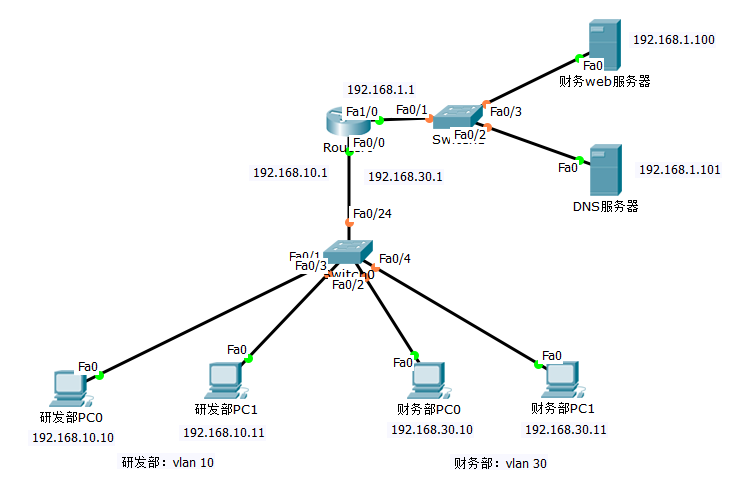
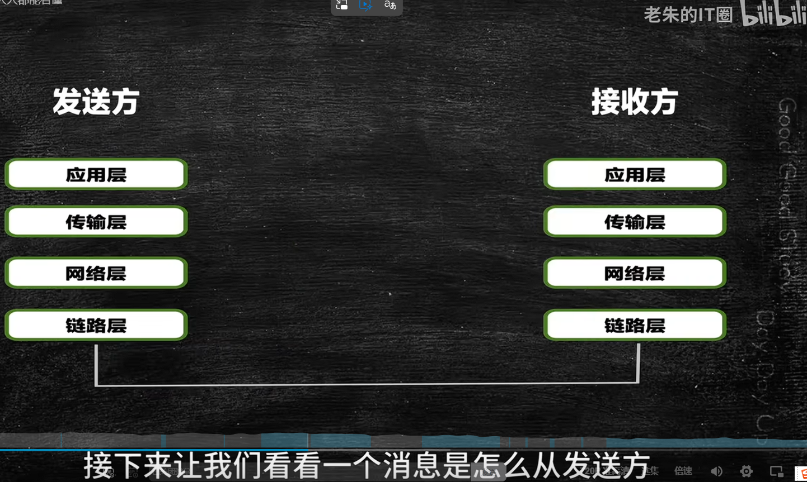

拓扑说明：包含PC0（192.168.1.10）、交换机、路由器、Web服务器（192.168.2.30），模拟极客公司办公网场景
点击下方链接下载可编辑的Packet Tracer拓扑文件：
下载PC0访问Web服务器拓扑图（.pkt）观看PC0通过HTTP访问Web服务器的完整操作视频：
第一步:DNS进程启动，紧接着触发ARP发现 第二步、ARP协议数据流分析 第三步、DNS协议数据流分析 第四步、TCP连接建立数据流分析 第五步、HTTP协议数据流分析 第六步、TCP连接释放数据流分析点击下方图片，查看数据包从应用层到物理层的封装全过程动画：
💡 提示：点击图片自动跳转至动画演示页面
基于左侧拓扑，PC0访问Web服务器的全流程涉及以下核心协议：
问题1：拓扑图导入后设备无法连线？→确认使用正确线缆（PC-交换机用直通线，路由器-路由器用交叉线）；
问题2：视频/动画无法播放？→更换浏览器（Chrome/Edge兼容性最佳）；
问题3：配置IP后仍无法通信？→检查PC默认网关是否配置为路由器对应端口IP；
问题4：HTTP服务开启后仍无法访问？→检查TCP 80端口是否被防火墙拦截，或服务器IP配置错误；
问题5：仿真模式无数据流？→确认切换到【Simulation】模式，勾选HTTP/TCP/IP协议过滤规则。
跟随助手提问，一步步排查PC0无法访问Web服务器的问题（输入任意关键词即可进入下一步）
💡 提示：点击浏览器左上角「返回」可回到主页面；拓扑文件、视频、动画需替换为实际资源路径后使用。